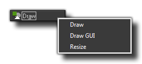

The Draw Event
The draw event is one of the many events that can be triggered in an instance and may contain code or actions.
 Draw Event
Draw Event
This event is the one that governs what you see on the screen when you run your game, and is split into three seperate "sub-events" - the Draw Event, the Draw GUI Event and
the the Resize Event:

The main draw event is the one covered here and runs before the Draw GUI event, meaning that everything that is drawn in this event is drawn beneath that of the Draw Gui event, regardless of depth (anything
drawn in the Draw GUI event will always be drawn over anything drawn in the normal draw event, regardless of depth).
All instances have a draw event which will run as long as the instance has the visible flag set to true (invisible objects do not trigger a draw event), and note that even if you have defined nothing for this
event in the object properties (ie: no code nor actions), if the object has a sprite assigned it has a draw event! You see, GameMaker:Studio has two ways to draw things:
- the default draw, which is when you define the sprite in the object properties and place no actions or code in the draw event, in which case GameMaker:Studio will draw that sprite,
but note that any transforms you perform in other events to change the image scale, index, blending etc... will be reflected too as long as the draw event is empty.
- the custom draw, which is when you place code or actions in the draw event. This is telling GameMaker:Studio "I want to control what you draw for this object" and it completely over-rides
the default draw. This means that you can have an object with a sprite assigned, then set the draw event to draw text and the sprite will not be drawn as you have not told GameMaker:Studio
to draw it.
The draw event is a very intensive event too, in that it's one of the events that takes up most time and resources... to that end it is never a good idea to do anything in the draw event other than drawing,
so save your large code or complex actions for the step event or alarms or whatever, but leave the draw event clear for the drawing as that's what it does best.
Note : What you draw has nothing to do with the collision engine you choose (traditional or physics) as that is defined by the object properties and the sprite or mask that the object has been given.
© Copyright YoYo Games Ltd. 2013 All Rights Reserved